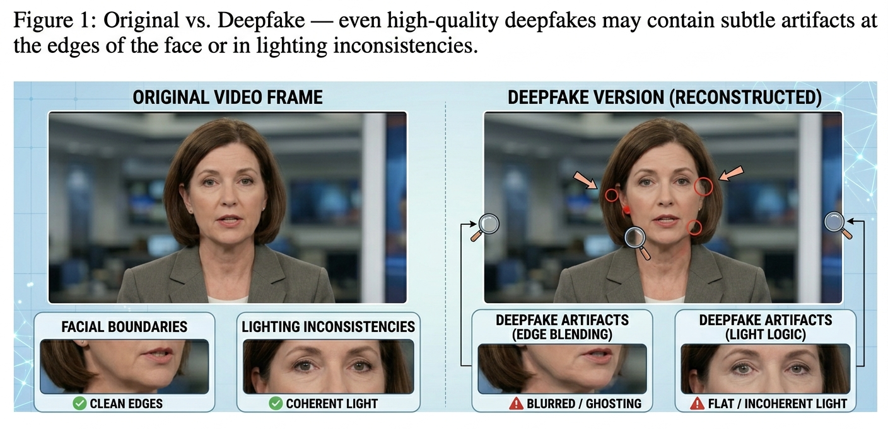
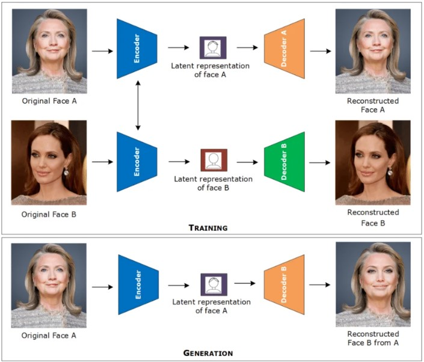

Deepfakes represent one of the most serious and rapidly evolving threats to truth in the digital age. They are AI-generated videos, images, or audio recordings that show real people doing or saying things they never actually did — and they are becoming harder and harder to detect with the naked eye.
What Is a Deepfake?
The term "deepfake" combines "deep learning" — the AI technique used to create them — with "fake." A deepfake is a piece of synthetic media in which a person's likeness, voice, or both are replaced or manipulated using AI to create a convincing but entirely false representation. The person in the deepfake may appear to say words they never spoke, perform actions they never did, or be placed in situations they were never in.
While the concept of manipulated media is not new — photo and video editing have existed for decades — deepfakes are different in scale, quality, and accessibility. What once required a Hollywood-level visual effects studio can now be accomplished by a teenager with a laptop and a free application. This democratization of deception is what makes deepfakes a uniquely dangerous phenomenon.

How Deepfakes Are Made
Most deepfakes are created using a type of neural network called an autoencoder, often in combination with GANs (Generative Adversarial Networks). The process begins by training the model on a large collection of images or video frames of the target person — their face, expressions, angles, and lighting conditions. The more source material available, the more convincing the final deepfake will be.
Once trained, the model learns to encode the target person's face and decode it onto another person's face in real time. The result is a video that appears to show the target person performing the actions and expressions of the source video — but with the original person replaced. Audio deepfakes use a similar process, cloning the target's voice and synthesizing new speech in it.
-
1
Data Collection
Hundreds or thousands of images and video frames of the target person are collected, often from public sources like social media and news footage.
-
2
Model Training
An autoencoder or GAN is trained on this data to learn the visual features of the target's face — expressions, skin texture, lighting responses, and angles.
-
3
Face Swapping
The trained model is applied to a source video, replacing the source person's face with the target's face, frame by frame.
-
4
Post-Processing
The output is refined to smooth inconsistencies, match skin tones, and align lighting — making the result more convincing.

Types of Deepfakes
Deepfake technology is not limited to face swapping. There are several distinct types, each with different techniques and use cases:
Face Swap
The most common type — one person's face is replaced with another's in a video, making it appear they performed the actions shown.
Lip Sync
The target's mouth movements are altered to match new audio — making them appear to say things they never said without replacing their face entirely.
Puppet Master
The target's entire face and head movements are driven by a separate person's movements in real time, as if they were a puppet.
Voice Deepfake
Audio-only deepfakes that clone a person's voice and generate new speech in it — no video required.
How to Detect a Deepfake
While deepfakes are becoming harder to detect, careful observation can still reveal many of them. The following are the most reliable visual and behavioral signals to look for:
- Unnatural blinking — too frequent, too infrequent, or eyelids that flicker
- Blurring or warping at the edges of the face, especially the hairline and ears
- Inconsistent skin tone between the face and the neck
- Lighting on the face that does not match the rest of the scene
- Teeth that appear blurry or oddly shaped
- Facial expressions that seem slightly delayed or unnatural
- Audio that does not perfectly match lip movements
- Background elements that warp or shift near the person's head
The eyes often reveal what the algorithm missed. Look for subtle irregularities in how they move, blink, and reflect light — these are among the hardest things for deepfake models to replicate correctly.
— Deepfake Detection Research, Media Forensics LabReal-World Harm
Deepfakes have already caused documented harm across multiple domains. Politicians have been targeted with fake videos designed to damage their reputations or provoke public outrage. Celebrities have had their faces placed into non-consensual intimate content without their knowledge or permission. Private individuals have been victimized through deepfake harassment and extortion. Business executives have been impersonated using voice deepfakes to authorize fraudulent financial transfers worth millions of dollars.
The psychological harm to victims is often severe — a loss of control over one's own image and voice, reputational damage that can be nearly impossible to undo, and the emotional burden of knowing that synthetic versions of yourself are circulating online. These are not edge cases. They are increasingly common occurrences affecting ordinary people around the world.
Non-consensual deepfake content disproportionately targets women. Studies have found that the overwhelming majority of deepfake content online is non-consensual intimate imagery — a form of digital abuse with serious psychological consequences for victims.
What Is Being Done
Governments, technology companies, and researchers are actively working to combat the deepfake threat. Detection tools have been developed that use AI to analyze videos for deepfake artifacts, though these tools face the ongoing challenge of keeping up with increasingly sophisticated generation techniques. Several countries have passed or are developing legislation that criminalizes the creation and distribution of deepfakes used for harassment, fraud, or election interference.
Major platforms like Meta, YouTube, and TikTok have policies against deepfake content, particularly non-consensual intimate imagery, and have invested in automated detection systems. Media provenance standards — cryptographic signatures embedded in authentic media at the point of creation — are being developed as a long-term solution, allowing viewers to verify that a video has not been manipulated.
What We've Learned
Deepfakes are AI-generated synthetic media that replace or manipulate a person's likeness to make them appear to say or do things they never did. They are created using autoencoders and GANs trained on images or video of the target person, and they range from face swaps and lip syncs to full puppet-master animations and voice clones.
While detection tools and legislation are developing, the most important defense remains individual media literacy. Learning to recognize the visual and behavioral signs of a deepfake — blurring at the face edges, unnatural blinking, lighting inconsistencies — and developing the habit of verifying content before sharing it are essential skills for every digital citizen in an age where seeing is no longer believing.
If a video shows a public figure doing or saying something shocking, stop before you share. Ask where it came from, look for verification from trusted sources, and examine it closely for the signs of deepfake manipulation. Your critical thinking is the first line of defense.